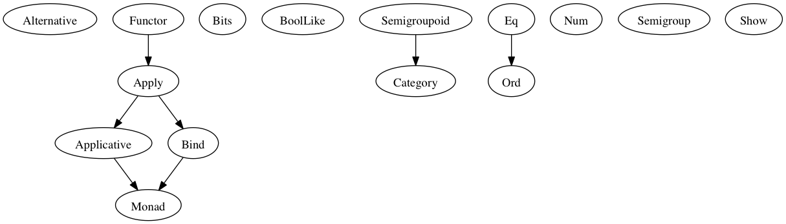

Module Documentation¶
Module Prelude¶
Types¶
data Ordering where
LT :: Ordering
GT :: Ordering
EQ :: Ordering
data Unit where
Unit :: { } -> Unit
Type Classes¶

Prelude
class Alternative f where
empty :: forall a. f a
(<|>) :: forall a. f a -> f a -> f a
class (Apply f) <= Applicative f where
pure :: forall a. a -> f a
class (Functor f) <= Apply f where
(<*>) :: forall a b. f (a -> b) -> f a -> f b
class (Apply m) <= Bind m where
(>>=) :: forall a b. m a -> (a -> m b) -> m b
class Bits b where
(&) :: b -> b -> b
(|) :: b -> b -> b
(^) :: b -> b -> b
shl :: b -> Number -> b
shr :: b -> Number -> b
zshr :: b -> Number -> b
complement :: b -> b
class BoolLike b where
(&&) :: b -> b -> b
(||) :: b -> b -> b
not :: b -> b
class (Semigroupoid a) <= Category a where
id :: forall t. a t t
class Eq a where
(==) :: a -> a -> Boolean
(/=) :: a -> a -> Boolean
class Functor f where
(<$>) :: forall a b. (a -> b) -> f a -> f b
class (Applicative m, Bind m) <= Monad m where
class Num a where
(+) :: a -> a -> a
(-) :: a -> a -> a
(*) :: a -> a -> a
(/) :: a -> a -> a
(%) :: a -> a -> a
negate :: a -> a
class (Eq a) <= Ord a where
compare :: a -> a -> Ordering
class Semigroup a where
(<>) :: a -> a -> a
class Semigroupoid a where
(<<<) :: forall b c d. a c d -> a b c -> a b d
class Show a where
show :: a -> String
Type Class Instances¶
instance applicativeArr :: Applicative (Prim.Function r)
instance applyArr :: Apply (Prim.Function r)
instance bindArr :: Bind (Prim.Function r)
instance bitsNumber :: Bits Number
instance boolLikeBoolean :: BoolLike Boolean
instance categoryArr :: Category Prim.Function
instance eqArray :: (Eq a) => Eq [a]
instance eqBoolean :: Eq Boolean
instance eqNumber :: Eq Number
instance eqOrdering :: Eq Ordering
instance eqString :: Eq String
instance eqUnit :: Eq Unit
instance functorArr :: Functor (Prim.Function r)
instance monadArr :: Monad (Prim.Function r)
instance numNumber :: Num Number
instance ordArray :: (Ord a) => Ord [a]
instance ordBoolean :: Ord Boolean
instance ordNumber :: Ord Number
instance ordString :: Ord String
instance ordUnit :: Ord Unit
instance semigroupArr :: (Semigroup s') => Semigroup (s -> s')
instance semigroupString :: Semigroup String
instance semigroupUnit :: Semigroup Unit
instance semigroupoidArr :: Semigroupoid Prim.Function
instance showArray :: (Show a) => Show [a]
instance showBoolean :: Show Boolean
instance showNumber :: Show Number
instance showOrdering :: Show Ordering
instance showString :: Show String
instance showUnit :: Show Unit
Values¶
(#) :: forall a b. a -> (a -> b) -> b
($) :: forall a b. (a -> b) -> a -> b
(++) :: forall s. (Semigroup s) => s -> s -> s
(:) :: forall a. a -> [a] -> [a]
(<) :: forall a. (Ord a) => a -> a -> Boolean
(<=) :: forall a. (Ord a) => a -> a -> Boolean
(>) :: forall a. (Ord a) => a -> a -> Boolean
(>=) :: forall a. (Ord a) => a -> a -> Boolean
(>>>) :: forall a b c d. (Semigroupoid a) => a b c -> a c d -> a b d
ap :: forall m a b. (Monad m) => m (a -> b) -> m a -> m b
asTypeOf :: forall a. a -> a -> a
cons :: forall a. a -> [a] -> [a]
const :: forall a b. a -> b -> a
flip :: forall a b c. (a -> b -> c) -> b -> a -> c
liftA1 :: forall f a b. (Applicative f) => (a -> b) -> f a -> f b
liftM1 :: forall m a b. (Monad m) => (a -> b) -> m a -> m b
refEq :: forall a. a -> a -> Boolean
refIneq :: forall a. a -> a -> Boolean
return :: forall m a. (Monad m) => a -> m a
unit :: Unit
void :: forall f a. (Functor f) => f a -> f Unit
Module Data.Function¶
Types¶
data Fn0 :: * -> *
data Fn1 :: * -> * -> *
data Fn10 :: * -> * -> * -> * -> * -> * -> * -> * -> * -> * -> * -> *
data Fn2 :: * -> * -> * -> *
data Fn3 :: * -> * -> * -> * -> *
data Fn4 :: * -> * -> * -> * -> * -> *
data Fn5 :: * -> * -> * -> * -> * -> * -> *
data Fn6 :: * -> * -> * -> * -> * -> * -> * -> *
data Fn7 :: * -> * -> * -> * -> * -> * -> * -> * -> *
data Fn8 :: * -> * -> * -> * -> * -> * -> * -> * -> * -> *
data Fn9 :: * -> * -> * -> * -> * -> * -> * -> * -> * -> * -> *
Values¶
mkFn0 :: forall a. (Unit -> a) -> Fn0 a
mkFn1 :: forall a b. (a -> b) -> Fn1 a b
mkFn10 :: forall a b c d e f g h i j k. (a -> b -> c -> d -> e -> f -> g -> h -> i -> j -> k) -> Fn10 a b c d e f g h i j k
mkFn2 :: forall a b c. (a -> b -> c) -> Fn2 a b c
mkFn3 :: forall a b c d. (a -> b -> c -> d) -> Fn3 a b c d
mkFn4 :: forall a b c d e. (a -> b -> c -> d -> e) -> Fn4 a b c d e
mkFn5 :: forall a b c d e f. (a -> b -> c -> d -> e -> f) -> Fn5 a b c d e f
mkFn6 :: forall a b c d e f g. (a -> b -> c -> d -> e -> f -> g) -> Fn6 a b c d e f g
mkFn7 :: forall a b c d e f g h. (a -> b -> c -> d -> e -> f -> g -> h) -> Fn7 a b c d e f g h
mkFn8 :: forall a b c d e f g h i. (a -> b -> c -> d -> e -> f -> g -> h -> i) -> Fn8 a b c d e f g h i
mkFn9 :: forall a b c d e f g h i j. (a -> b -> c -> d -> e -> f -> g -> h -> i -> j) -> Fn9 a b c d e f g h i j
on :: forall a b c. (b -> b -> c) -> (a -> b) -> a -> a -> c
runFn0 :: forall a. Fn0 a -> a
runFn1 :: forall a b. Fn1 a b -> a -> b
runFn10 :: forall a b c d e f g h i j k. Fn10 a b c d e f g h i j k -> a -> b -> c -> d -> e -> f -> g -> h -> i -> j -> k
runFn2 :: forall a b c. Fn2 a b c -> a -> b -> c
runFn3 :: forall a b c d. Fn3 a b c d -> a -> b -> c -> d
runFn4 :: forall a b c d e. Fn4 a b c d e -> a -> b -> c -> d -> e
runFn5 :: forall a b c d e f. Fn5 a b c d e f -> a -> b -> c -> d -> e -> f
runFn6 :: forall a b c d e f g. Fn6 a b c d e f g -> a -> b -> c -> d -> e -> f -> g
runFn7 :: forall a b c d e f g h. Fn7 a b c d e f g h -> a -> b -> c -> d -> e -> f -> g -> h
runFn8 :: forall a b c d e f g h i. Fn8 a b c d e f g h i -> a -> b -> c -> d -> e -> f -> g -> h -> i
runFn9 :: forall a b c d e f g h i j. Fn9 a b c d e f g h i j -> a -> b -> c -> d -> e -> f -> g -> h -> i -> j
Module Data.Eq¶
Types¶
data Ref a where
Ref :: a -> Ref a
Type Class Instances¶
instance eqRef :: Eq (Ref a)
instance functorRef :: Functor Ref
Values¶
liftRef :: forall a b. (a -> a -> b) -> Ref a -> Ref a -> b
Module Control.Monad.Eff¶
Types¶
data Eff :: # ! -> * -> *
type Pure a = forall e. Eff e a
Type Class Instances¶
instance applicativeEff :: Applicative (Eff e)
instance applyEff :: Apply (Eff e)
instance bindEff :: Bind (Eff e)
instance functorEff :: Functor (Eff e)
instance monadEff :: Monad (Eff e)
Values¶
bindE :: forall e a b. Eff e a -> (a -> Eff e b) -> Eff e b
forE :: forall e. Number -> Number -> (Number -> Eff e Unit) -> Eff e Unit
foreachE :: forall e a. [a] -> (a -> Eff e Unit) -> Eff e Unit
returnE :: forall e a. a -> Eff e a
runPure :: forall a. Pure a -> a
untilE :: forall e. Eff e Boolean -> Eff e Unit
whileE :: forall e a. Eff e Boolean -> Eff e a -> Eff e Unit
Module Control.Monad.Eff.Unsafe¶
Values¶
unsafeInterleaveEff :: forall eff1 eff2 a. Eff eff1 a -> Eff eff2 a
Module Debug.Trace¶
Types¶
data Trace :: !
Values¶
print :: forall a r. (Show a) => a -> Eff (trace :: Trace | r) Unit
trace :: forall r. String -> Eff (trace :: Trace | r) Unit
Module Control.Monad.ST¶
Types¶
data ST :: * -> !
data STArray :: * -> * -> *
data STRef :: * -> * -> *
Values¶
modifySTRef :: forall a h r. STRef h a -> (a -> a) -> Eff (st :: ST h | r) a
newSTArray :: forall a h r. Number -> a -> Eff (st :: ST h | r) (STArray h a)
newSTRef :: forall a h r. a -> Eff (st :: ST h | r) (STRef h a)
peekSTArray :: forall a h r. STArray h a -> Eff (st :: ST h | r) a
pokeSTArray :: forall a h r. STArray h a -> Number -> a -> Eff (st :: ST h | r) a
readSTRef :: forall a h r. STRef h a -> Eff (st :: ST h | r) a
runST :: forall a r. (forall h. Eff (st :: ST h | r) a) -> Eff r a
runSTArray :: forall a r. (forall h. Eff (st :: ST h | r) (STArray h a)) -> Eff r [a]
writeSTRef :: forall a h r. STRef h a -> a -> Eff (st :: ST h | r) a